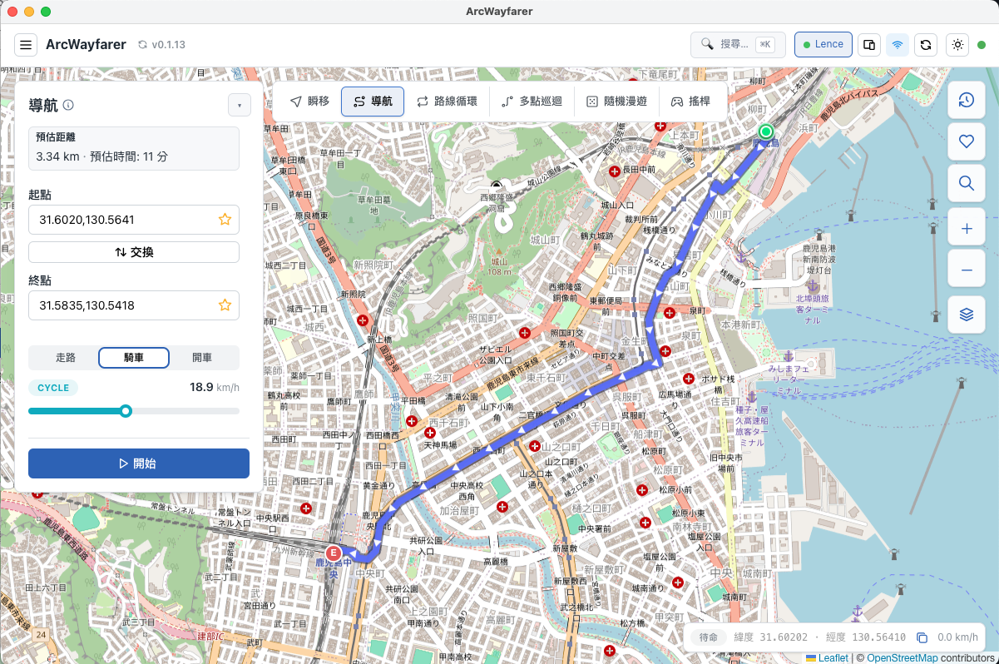
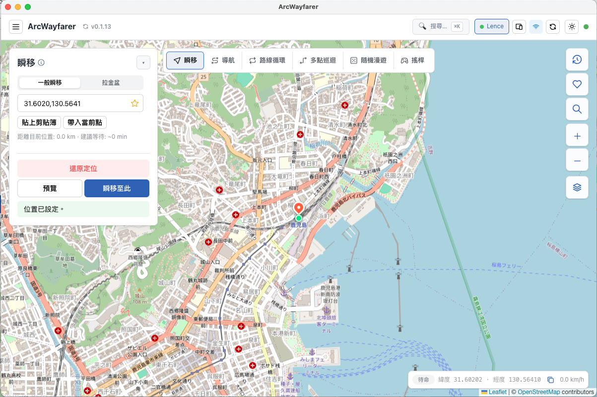

電腦
使用 macOS（Apple Silicon 或 Intel）或 Windows 10 / 11 64-bit，下載對應安裝檔。
IOS LOCATION TESTING GUIDE
ArcWayfarer 將單一位置、道路路線與移動速度放在同一個地圖控制台。先完成連線與預覽，再執行位置測試或情境模擬，讓流程更容易重現。

使用 macOS（Apple Silicon 或 Intel）或 Windows 10 / 11 64-bit，下載對應安裝檔。
使用 iOS 16 以上裝置，以可傳輸資料的 USB 線連接，並在裝置上確認「信任這部電腦」。
啟動後確認頂部顯示已連接的裝置。iOS 17 以上首次建立通道時，系統可能要求額外權限。
在「瞬移」面板輸入座標、搜尋地點或直接於地圖選點。設定後，面板會顯示位置已設定；需要結束測試時，可使用「還原定位」回到真實 GPS。

不需要越獄。ArcWayfarer 將所需的桌面端連線流程整合為 App；請依首次連線時的系統提示完成必要授權。
預覽可確認起終點、道路走向、距離、時間與速度設定，避免在不符合需求時就開始執行。
不一定。第三方 App 的位置更新、服務條款與偵測規則各不相同；請僅在你有權測試或使用的情境中操作。